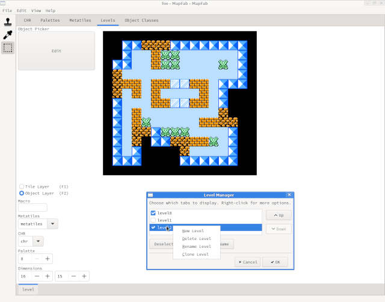

MapFab is a metatile-based level editor for making NES games. It is designed to be used with NESFab, but can be used with other programming environments as well.
The best way to get MapFab is by compiling it from the source, which will always be up-to-date. For those who don't like compiling, binary releases will be provided from time to time.